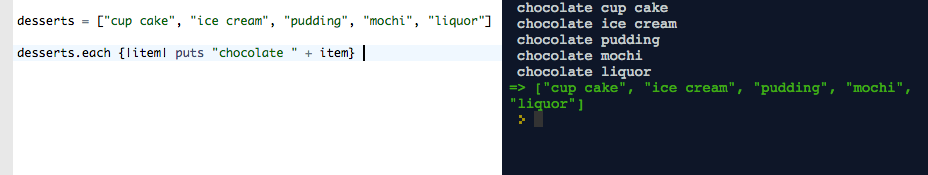
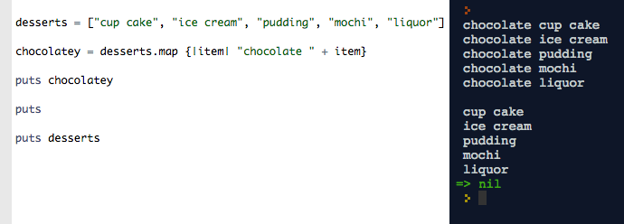
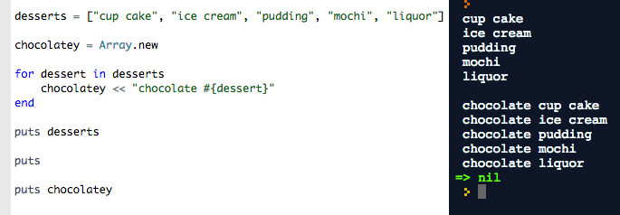

Introduction to Map
This week at DBC, we've spent a lot of time learning about the basics of two Ruby classes: hash and array, which are both types of collections of information. We've also seen several methods that allow us to extract and manipulate data in these objects, including if/else logic and while loops for iterating through hashes and arrays. We've even seen a .each method that will do something to each item in an array or hash as so:
Each
Notice that each of the best (ahem, chocolate) desserts are put to the console, but what is returned by the green arrow on the right is actually our original, unaltered array. It was a dalliance, not a committed menu update.
In addition to these basic iterating tools, Ruby has a powerful group of methods in the module Enumerable that allow us to easily perform operations on collections of info, without verbose if/else, while/unless loops. One of these cool Enumerable methods is called 'map.'
Map takes an array, does something you tell it to do to each item in the array, and then returns a NEW ARRAY, which is a collection of those transformed items. For instance:Map
Notice that the original array desserts remains unchanged.
Why is this useful? In this example, we could have achieved the same result without map, but it would have taken a bit more code:
For
How is map different from other methods? First, it does not change the original array. If you want it to do that, you can use its bang ! counterpart: map! . In contrast, .each will iterate over the elements of an array or hash, doing something at each one (like printing it or printing an altered version of it - [1,2,3,4,5].each {|x| print x+2} #=> 34567 - but it will not return those items in any array whatsoever. It also does not modify the original. So it's a sand castle operation: the glorious output is there, but washed away at the end of the day when the tide comes in.

I have also heard that there is a .collect method that does basically the same thing as map: performs a transformation and then collects the newly created elements in a new array. I prefer the name map, because it makes me picture a little transformative action being applied over the existing element, like adding a new cologne, or pair of sunglasses to the way you see the world.
That's all for now. Hope you found something useful. Go try it out! You can use irb or Code Academy Labs (free).